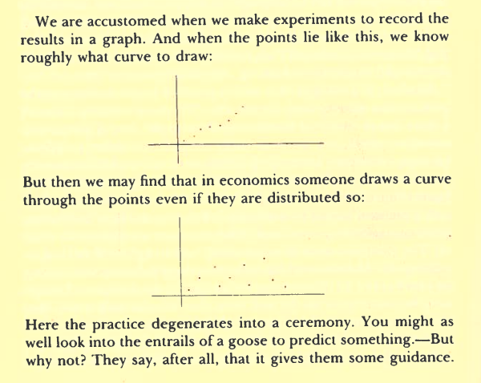
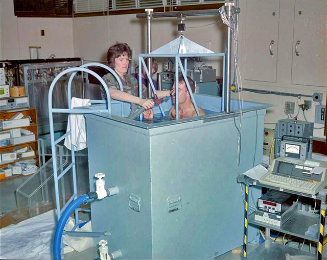

In Lecture XXI of Wittgenstein’s “Lectures on the Foundations of Mathematics” we find this diagram and quote:

Entrails of a Goose
In the same passage, he goes on to say,
“A use of language has normally what we might call a point. This is immensely important. Although it’s true this is a matter of degree, and we can’t just say where it ends.”
When we run a regression, we must have a point. Otherwise we are just looking at goose entrails.
── Attaching core tidyverse packages ─────────────────────────────────────────────────────────────────────────────────────────────────────────────────────────────────────────────────────────── tidyverse 2.0.0 ──
✔ dplyr 1.1.2 ✔ readr 2.1.4
✔ forcats 1.0.0 ✔ stringr 1.5.0
✔ ggplot2 3.4.2 ✔ tibble 3.2.1
✔ lubridate 1.9.2 ✔ tidyr 1.3.0
✔ purrr 1.0.1
── Conflicts ───────────────────────────────────────────────────────────────────────────────────────────────────────────────────────────────────────────────────────────────────────────── tidyverse_conflicts() ──
✖ dplyr::filter() masks stats::filter()
✖ dplyr::lag() masks stats::lag()
ℹ Use the conflicted package (<http://conflicted.r-lib.org/>) to force all conflicts to become errors
Attaching package: ‘gridExtra’
The following object is masked from ‘package:dplyr’:
combine
Loading required package: carData
Attaching package: ‘car’
The following object is masked from ‘package:dplyr’:
recode
The following object is masked from ‘package:purrr’:
some
Spotify data
Almost 30,000 Songs from the Spotify API with black-box machine learning quantifications of musical features.
setwd("..")spotify_df <-read.csv("datasets/spotify_songs.csv")head(spotify_df)print(sprintf("%d rows in the dataframe.", nrow(spotify_df)))print(names(spotify_df))
A data.frame: 6 × 23
track_id
track_name
track_artist
track_popularity
track_album_id
track_album_name
track_album_release_date
playlist_name
playlist_id
playlist_genre
⋯
key
loudness
mode
speechiness
acousticness
instrumentalness
liveness
valence
tempo
duration_ms
<chr>
<chr>
<chr>
<int>
<chr>
<chr>
<chr>
<chr>
<chr>
<chr>
⋯
<int>
<dbl>
<int>
<dbl>
<dbl>
<dbl>
<dbl>
<dbl>
<dbl>
<int>
1
6f807x0ima9a1j3VPbc7VN
I Don't Care (with Justin Bieber) - Loud Luxury Remix
Ed Sheeran
66
2oCs0DGTsRO98Gh5ZSl2Cx
I Don't Care (with Justin Bieber) [Loud Luxury Remix]
Warning message:
“`qplot()` was deprecated in ggplot2 3.4.0.”
`stat_bin()` using `bins = 30`. Pick better value with `binwidth`.
`stat_bin()` using `bins = 30`. Pick better value with `binwidth`.
Warning message:
“Removed 2703 rows containing non-finite values (`stat_bin()`).”
Measuring bodyfat precisely is hard, and proxies are very useful. Can we predict the outcome of an expensive, inconvenient procedure using only easy-to-gather measurements?

Hydrostatic weighing
Image from https://www.topendsports.com/testing/tests/underwater.htm